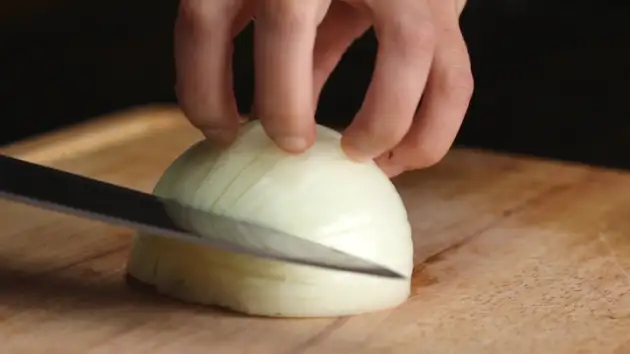
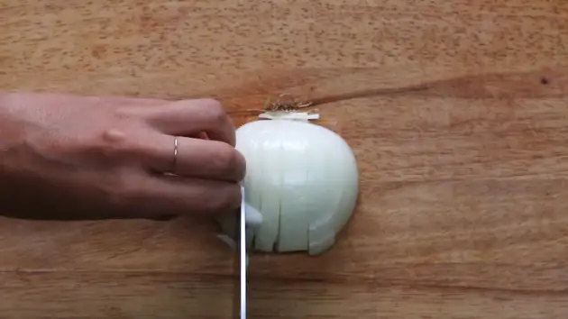

Peel the outer layers and face the flat side down on the cutting board. Make a few horizontal incisions into the onion.

Then, turn it toward you and make a few cuts vertically.

Turn the onion again and start chopping along to get an even dice.
Recipes may call for a small, medium or large dice.